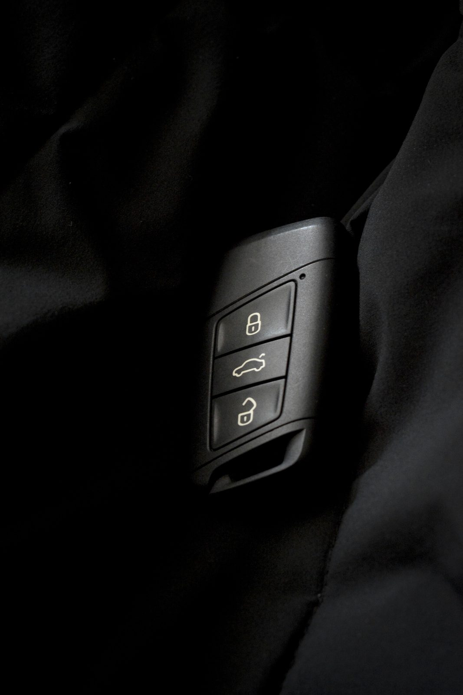
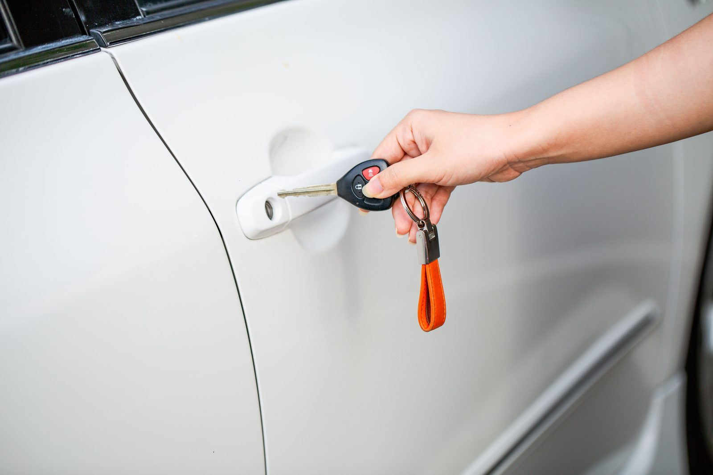
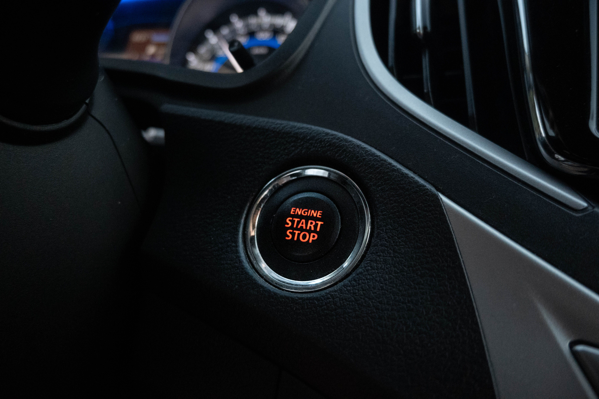

Transponder Key vs. Key Fob vs. Push-to-Start: What's the Difference?

The difference comes down to how your key talks to your car. A transponder key is a metal key with a hidden chip that you turn in the ignition. A remote key fob adds buttons to lock, unlock, and sometimes remote-start. A push-to-start (smart) key lets you start the car without inserting anything at all, as long as the key is nearby. All three do more than an old-fashioned metal key — and all three cost more to replace, because they have to be programmed to your specific vehicle. Here's how to tell which one you have, and what each means for you.
Not sure what your car takes? Call (405) 870-5397 and we'll tell you.
Call Now — (405) 870-5397Quick comparison
Swipe the table sideways to see all three →
| Transponder key | Remote key fob | Push-to-start (smart key) | |
|---|---|---|---|
| How you start the car | Turn the key in the ignition | Turn the key in the ignition | Push a button (key in your pocket) |
| Lock/unlock buttons | No | Yes | Yes |
| Has a chip that's programmed | Yes | Yes | Yes |
| Typical replacement cost* | ~$120–$250 | ~$150–$350 | ~$200–$450+ |
| Common on | Late-'90s–2010s vehicles | 2000s–today | Newer vehicles |
*OKC-area ranges; your exact price depends on your vehicle. We quote it up front.
What is a transponder (chip) key?

A transponder key looks like a normal metal key, but there's a tiny chip hidden in the plastic head. When you turn it in the ignition, the chip sends a code to your car's immobilizer, and the car only starts if the code matches. That's why a hardware-store copy of a chip key won't start your car — the metal can be cut, but the chip still has to be programmed. Most vehicles from the mid-1990s through the 2010s use these.
What is a remote key fob?
A remote key fob is a transponder key with buttons added — lock, unlock, trunk, panic, and sometimes remote start. Some are one piece; others are a "flip" key where the metal blade folds into the fob. You still put the key in the ignition to start the car, but the buttons let you control it from a distance. Like a transponder, the fob has to be programmed to your vehicle to work.
What is a push-to-start (smart) key?

A push-to-start key — also called a smart key or proximity key — is the most advanced of the three. You don't insert it anywhere. As long as it's in your pocket or bag, the car senses it, and you start the engine by pressing a button. These take specialized equipment and secure programming to replace, which is why they sit at the top of the price range. They're standard on most newer vehicles.
How do I know which one I have?
Quick way to tell: if you insert a key and turn it to start, you have a transponder key (no buttons) or a remote fob (with buttons). If you press a button to start and never take a key out of your pocket, you have a push-to-start smart key. When in doubt, tell us your year, make, and model and we'll know instantly.
Why it matters when you need a replacement
All three have to be programmed to your car — that's the part that separates them from a plain metal key, and it's most of the cost. Generally, the more advanced the key, the more it costs to replace: transponder keys are the least expensive of the three, and push-to-start smart keys the most. The good news: a licensed locksmith can cut and program all three on-site for most domestic and Asian vehicles — usually faster and cheaper than the dealer.
Need any of the three replaced? Call (405) 870-5397 — we come to you.
Call Now — (405) 870-5397Frequently Asked Questions
What's the difference between a key fob and a transponder key?
A transponder key is a metal key with a hidden chip that you turn in the ignition. A key fob is the same idea with buttons added to lock, unlock, and sometimes remote-start. Both have a chip that must be programmed to your car.
Do all three types need to be programmed?
Yes. Transponder keys, remote fobs, and push-to-start keys all carry a chip that has to be programmed to your specific vehicle — which is why a simple cut copy won't start the car.
Which type is most expensive to replace?
Push-to-start (smart) keys are generally the most expensive, because they use the most advanced electronics and secure programming. Transponder keys are usually the least expensive of the three.
Can a locksmith replace a push-to-start key?
Yes. With dealer-level tools, we cut and program push-to-start smart keys on-site for most domestic and Asian vehicles — no dealership trip.
How do I know if my car has push-to-start?
If you start the car by pressing a button while the key stays in your pocket, it's push-to-start. If you insert and turn a key, it's a transponder key or a remote fob.